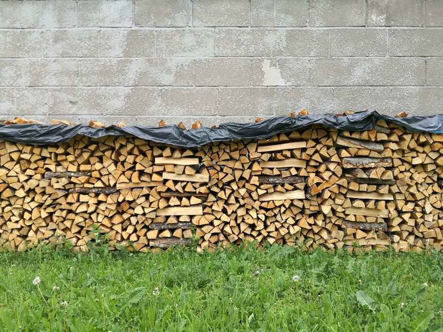

To clear an old woodpile, pull out any dry, sound pieces you still plan to burn, set the chainsaw fuel and bar oil aside for your city's chemical program, and leave the rest where it sits. Rotted, wet or bug-damaged firewood should not be burned, and a crew can carry the whole stack, the rack and the scraps out in one visit.
A lot of North Texas woodpiles start the same way. A tree came down in a storm, someone cut it into rounds, and the rounds got stacked along the fence for a fireplace that gets used a few nights a year. Three or four winters later the bottom rows are soft, the tarp has shredded, and the stack is leaning on the fence or the side of the house.
Why an old woodpile is worth clearing
Firewood stacked against the house is a standing invitation for termites. The EPA's guide to identifying and controlling termites says plainly not to pile or store firewood or wood debris next to the house. A stack that has sat on bare dirt for years, touching the siding or the fence, is exactly what that advice is about.
Old wood is also poor fuel. The EPA's best wood-burning practices say to burn only dry, split, well-seasoned wood, and that wood burns best below about 20 percent moisture. The same page lists wet, rotted, diseased or moldy wood among the things you should not burn at all. If the bottom half of your stack crumbles when you pick it up, it is not going in the fireplace this winter.
A woodpile also hides whatever is under it, and it is often the last thing standing between you and a clear side yard.
Sort before pickup day
Go through the stack once with gloves on. Pick pieces up rather than reaching blind into the gaps, because a pile that has sat for years is where spiders, scorpions and the occasional snake like to shelter.
Sort as you go. The pieces worth keeping are dry, split, light for their size and darker on the ends, and they sound hollow when two of them knock together. If you will actually burn them this winter, move them to a rack that keeps them off the ground.
Everything soft, gray, wet or crumbling goes in the haul pile, along with rounds that were never split, pieces with mushrooms or bore holes, and anything that has sat under a tarp so long it is fused to the dirt.
Then pull out anything that should never be burned: scrap lumber, painted boards, plywood and pressure-treated wood that ended up on the pile. The EPA lists coated, painted and pressure-treated wood among the things not to burn, so it goes out with the load. Our post on fence and deck teardown debris covers treated lumber in more detail.
You do not have to restack or bundle anything for us. Sorting is only about saving the wood you still want.
The fuel stays behind. The chainsaw that cut the pile usually left a gas can and a jug of bar oil somewhere nearby. Those are household hazardous waste, and they go to your city's chemical collection program, not onto our truck. Plano residents can use the city's household chemical collection program, and most cities in the area run something similar.
What we carry off
On a typical woodpile job we take:
- old firewood in any condition, split or in rounds
- storm wood and limbs that never got cut down to size
- the bark, chips and rotted base layer under the stack
- old firewood racks, pallets the stack sat on and torn tarps
- stray lumber and fence boards that got tossed on the pile
- leftover brush and small limbs from the original tree work
The crew loads loose material from wherever it sits, whether that is along the back fence, under the deck or beside the garage. Once the stack is gone, the ground underneath usually needs a rake and a look. We sweep up what we can reach so you are not left with a rectangle of chips.
If the woodpile is part of a bigger pile of limbs and brush, our post on brush piles, tree limbs and what the city will not collect covers the branch side and the city rules. If the stack lived in or beside a shed, our post on what is inside the shed covers the rest of that space.
The city option, and when it fits
Most cities in the area collect some brush at the curb, and it is free. Dallas runs a monthly brush and bulky item collection with rules on piece size and where the pile can sit. Prosper's trash and recycling page covers weekly bundled yard waste and the scheduled brush and bulk day. If your firewood fits those rules and you can wait for the date, use them. We would rather tell you the free option exists than take money you did not have to spend.
Where we come in is the part those programs do not handle well: a heavy, mixed pile that has to be carried from the back of the yard, rounds too big to bundle, wood mixed with lumber and pallets, or a stack that needs to be gone this week rather than next month.
Where the woodpile jobs come from
Some of the biggest stacks we see are near the water. In Little Elm, wind off the lake brings down limbs from mature trees, and we often clear storm wood and old rounds from yards near Lake Lewisville that someone meant to burn and never did. In the older parts of Wylie, it is usually a woodpile from a mature tree that came down years ago, stacked along a fence line that is finally being redone. And in Dallas, the woodpile usually turns up as one part of a bigger job at a long-owned house where the back of the lot has been filling for years.
How the pickup runs
Send us a photo of the stack and tell us where it sits and what is between it and the street: a gate, a narrow side yard, a slope. A crew looks at what you have and gives you a firm number before anything is loaded. The quote is the bill, and disposal is included. We are affordable and priced fair, based on how much there is to take.
You point, we carry, we sweep. These are our own crews, not gig labor. Call before noon and same afternoon is typical across the northern suburbs. When the keepers are pulled and the fuel is set aside, tell us what needs to go, or see how our yard debris removal works.
Frequently asked questions
Can I burn old firewood that has been sitting for years?
Only if it is still dry and sound. The EPA advises against burning wet, rotted, diseased or moldy wood, so soft or crumbling pieces should go out with the load instead.
Do I need to bundle or stack the wood for you?
No. The crew loads it loose from wherever it sits. Bundling only matters if you are using your city's curbside brush collection.
Will you take the rack and the pallets under the pile?
Yes. Racks, pallets, old tarps and the rotted layer under the stack all go in the same load.
Do you take the gas can and bar oil from the chainsaw?
No. Fuel and oil go to your city's household chemical collection program. Keep them closed in their original containers until drop-off.
Should firewood be stored against the house?
The EPA says not to pile or store firewood or wood debris next to the house because of termites. Keep what you are keeping on a rack, off the ground and away from the walls.
If you are keeping a few rows for the fireplace, stack them off the ground with only the top covered, the way the EPA suggests, and let us take the rest.